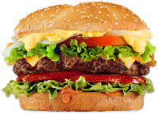

Taste is influenced by smell, vision and the sound of the food as we eat it. Additionally, touch receptors in the mouth and tongue tell us how crispy, crunchy, or pleasing the texture is. All of these signals put together inside of the brain make a decision about if we find the food pleasing or not.
Food safety is used as a scientific method/discipline describing handling, preparation, and storage of food in ways that prevent foodborne illness.
It creates deep flavours and marries together different ingredients to create balanced, flavoursome food. Seasoning can be sweet, savoury, acid or bitter. Without it, a dish can be bland. It's probably the easiest way to create a great tasting meal.
A diet rich in vegetables and fruits can lower blood pressure, reduce the risk of heart disease and stroke, prevent some types of cancer, lower risk of eye and digestive problems, and have a positive effect upon blood sugar, which can help keep appetite in check.
Sight is used to determine if the food has been properly cooked, is fresh with no brown spots, it looks desirable to eat and should we purchase it.